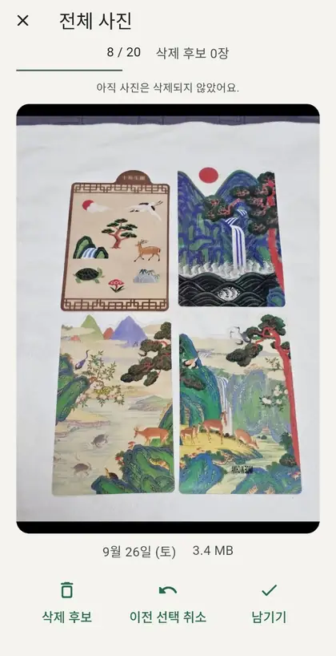
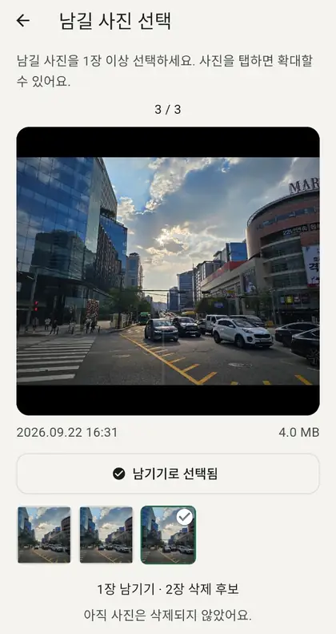

남길 사진만,
하나씩.
왼쪽으로 넘겨 삭제 후보에, 오른쪽으로 넘겨 남기기. 쌓인 사진을 내 속도로 정리하는 앱, PicKip.
Android 전용 · 한국어 / English / 日本語

한 번에 다 하지
않아도 돼요.
정리할 사진이 많아도 괜찮아요. 오늘 볼 만큼만 고르고, 한 장씩 결정해 보세요. 20장은 하루 제한이 아니라 한 번에 확인할 사진 수예요.
- 01
볼 만큼 고르고
20장, 50장, 100장 중 선택하세요. 전체 사진뿐 아니라 스크린샷, 이번 달 사진, 1년 이상 된 사진부터 시작할 수도 있어요.
20장50장100장 - 02
한 장씩 넘기고
왼쪽은 삭제 후보, 오른쪽은 남기기. 잘못 골랐다면 이전 선택을 취소할 수 있어요. 넘기는 것만으로 삭제되지는 않아요.
- 03
마지막으로 확인해요
삭제 후보를 모아 다시 살펴보세요. 남길 사진은 제외하고, 휴지통으로 옮길지 영구 삭제할지 직접 결정해요.

닮은 사진은 모아서,
마음에 드는 사진은 남겨요.
가까운 시간에 찍은 비슷한 사진을 묶어서 직접 비교해요. 사진을 크게 보고, 남길 사진을 한 장 이상 선택할 수 있어요.
촬영 시각과 이미지의 유사도를 함께 살펴봅니다. 휴대폰의 모든 중복 사진을 찾는 기능은 아니에요.
선택은,
아직 삭제가 아니에요.
삭제하기 전, 잠깐 멈춰 확인하세요. 삭제 후보를 고르는 단계와 실제로 삭제하는 단계를 나눴어요.
삭제 전 한 번 더
마지막 확인 화면에서 후보를 다시 보고, 남기기로 바꿀 수 있어요.
휴지통 또는 영구 삭제
기본은 휴지통 이동이에요. 영구 삭제는 따로 선택하며, PicKip에서는 복구할 수 없어요.
정리한 기록도 남겨요
확인한 사진 수와 정리한 사진 수, 처리한 용량을 최근 30회의 기록에서 볼 수 있어요.
사진은 기기에.
결정은 나에게.
회원가입이나 사진 업로드 없이 시작해요. 사진 비교에 필요한 분석과 남기기 기록은 기기 안에서 처리하고 보관합니다.
앱은 Google AdMob 광고를 사용할 수 있습니다. 사진 처리와 별도로 광고 관련 데이터가 처리될 수 있으며, 자세한 내용은 앱의 개인정보 안내에서 확인할 수 있어요.
왼쪽으로 넘기면 바로 지워지나요?
아니요. 삭제 후보로 선택할 뿐입니다. 마지막 확인 화면에서 삭제를 결정하기 전에는 사진이 삭제되지 않아요.
남기기로 고른 사진은 다시 나오나요?
일반 정리에서는 다시 표시하지 않습니다. 설정의 ‘남긴 사진 다시 보기’로 기록을 초기화할 수 있어요. 비슷한 사진 비교에서는 새 사진과 비교할 기준으로 다시 보일 수 있습니다.
사진 접근 권한은 왜 필요한가요?
사진 목록과 촬영 시각, 썸네일을 읽어 정리할 사진을 보여주고 비슷한 사진을 비교하기 위해 필요해요. Android에서 일부 사진만 허용했다면, 앱은 허용된 사진만 정리할 수 있습니다.
휴지통으로 옮기면 공간이 바로 늘어나나요?
바로 늘어나지 않을 수 있어요. 복구와 휴지통 비우기는 휴대폰 갤러리에서 진행해 주세요. 휴지통 지원과 보관 기간은 기기와 갤러리에 따라 다릅니다.
아이폰에서도 사용할 수 있나요?
현재 PicKip은 Android 전용입니다. 앱 화면은 한국어, 영어, 일본어를 지원하며 앱 설정에서 바꿀 수 있어요.
사진 정리를 가볍게.
한 장씩, 내가 남길 사진을 고르세요.
Google Play 공개 후 설치할 수 있어요. 공개 전에는 스토어 링크가 열리지 않을 수 있습니다.